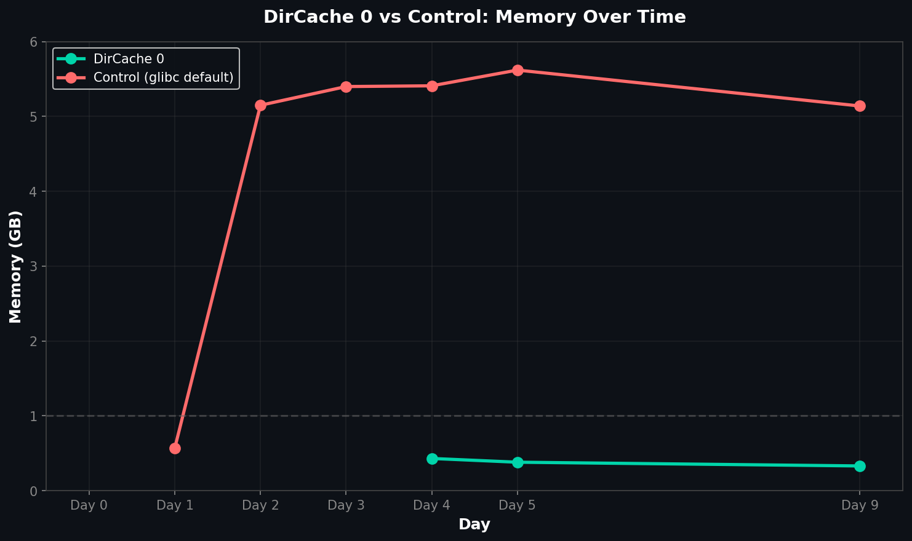

In September 2025 we investigated a pattern on our guard relays: memory looked normal after restart (~0.5 GB), then after ~48 hours RSS jumped and "stuck" around 5 GB. That's costly at fleet scale and a reliability risk.
We tested a radical configuration: DirCache 0. The impact was immediate and dramatic.
| Configuration | Start RSS | End RSS | Change |
|---|---|---|---|
| DirCache 0 | — | 0.33 GB | -93.8% |
| Control (default) | 0.57 GB | 5.14 GB | +802% |
Memory remained stable for 9+ days with DirCache disabled—no fragmentation, no gradual creep.
There's no free lunch. Disabling DirCache instantly revokes your relay's Guard status. The network requires Guards to handle directory traffic, so you cannot turn this feature off to save RAM if you want to remain a Guard.
The control relay shows the signature "fragmentation spike" inside the ~48-hour window, while the DirCache 0 relay remains flat. This experiment proved that memory isn't "leaking" in the traditional sense—it's being fragmented by the churn of directory data.
Since DirCache 0 is incompatible with Guard operation, the practical path is allocator-level mitigation (jemalloc/mimalloc) so guards can keep caching without ballooning to 5–6 GB RSS.
📊 Raw data: View experiment data and relay configs on GitHub